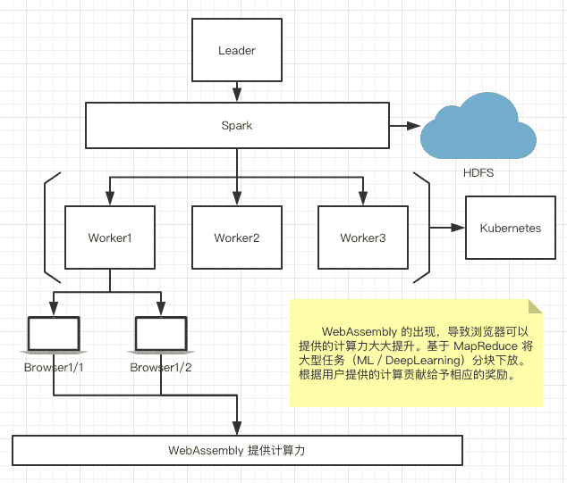
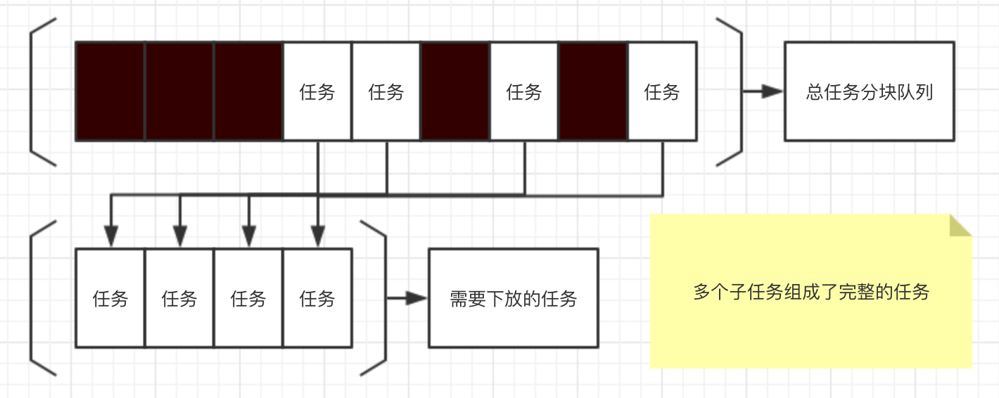

一种新的共享计算力模式
随着云计算、深度学习和区块链技术的发展与普及，人们对“计算力”的需求变得越来越迫切。大型公司可以通过横向扩展机房的形式来增加自己的“计算力”，但这种从物理上扩展机器的方式对一些初创的小公司来说可是一笔不小得开销负担。
其实在我们的身边还有一种大部分时间都在被浪费的计算力，而这些计算力便是来自于我们每个人都拥有的、生活中所必不可少的电子设备 - “个人电脑”，甚至是 - “智能手机”。这些智能设备在日常被使用的 90% 时间里都不会达到其 100% 的性能。相对的，如果我们能把这 90% 时间的闲置计算力使用起来，那会是一个十分强大的计算资源。
下面给出了一个基础架构的拓扑图，架构的整体还是基于已经趋于成熟的大数据处理框架，唯一的不同是这个分布式系统只负责基本的“计算任务”调度，具体的“计算任务”处理过程全部放在 Client 端的浏览器进行。由于只需要基本的任务分配和调度，因此不需要集群过大的横向拓展，成本上来讲并不算很高。位于集群最底层的 Worker 负责将上层的任务通过 MapReduce 切分成不同的“子任务块”然后下放给客户端，客户端的计算结果与 Worker 之间是实时通信的。

整个架构系统的难点在于，Worker 分配给 Client 端的任务并不是一定会被完全完成的，由于客户端的不确定性，对任务完成比率的校对会是一个比较棘手的问题。可以想到的方案是把“计算任务”分割成独立的小型任务，每次下放任务块时从没有完成的任务块中连续选择固定数量的任务块进行下放，如下图所示。

如果最后服务化变成产品，对用户计算任务的定义还要再进行具体的设计。